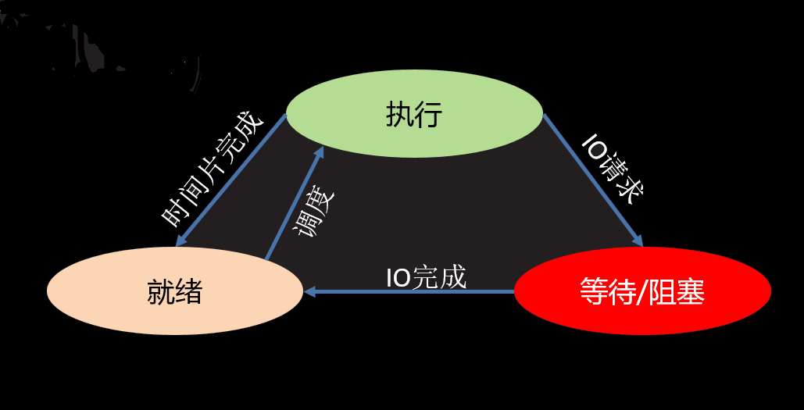
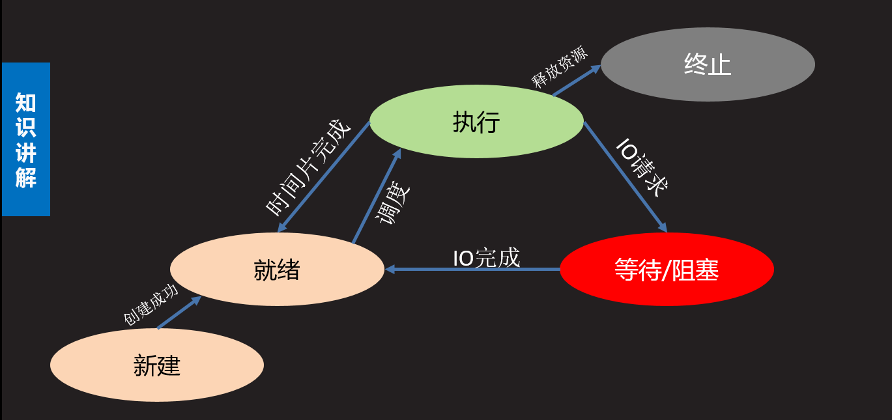

意义：充分利用计算机的资源提高程序的运行效率
定义：通过应用程序利用计算机多个核心，达到同时执行多个任务的目的
实施方案： 多进程、多线程
并行：多个计算机核心并行的同时处理多个任务
并发：内核在多个任务间不断切换，达到好像内核在同时处理多个任务的运行效果
进程：程序在计算机中运行一次的过程
程序：是一个可执行文件，是静态的，占有磁盘，不占有计算机运行资源
进程：进程是一个动态的过程描述，占有CPU内存等计算机资源的，有一定的生命周期
* 同一个程序的不同执行过程是不同的进程，因为分配的计算机资源等均不同
父子进程 : 系统中每一个进程(除了系统初始化进程)都有唯一的父进程,可以有0个或多个子进
程。父子进程关系便于进程管理。
CPU时间片：如果一个进程在某个时间点被计算机分配了内核，我们称为该进程在CPU时间片上。
PCB(进程控制块)：存放进程消息的空间
进程ID(PID)：进程在操作系统中的唯一编号，由系统自动分配
进程信息包括：进程PID，进程占有的内存位置，创建时间，创建用户. . . . . . . .
进程特征：
进程的状态
1、三态

2、五态（增加新建态和终止态）

查看进程树： pstree
查看父进程PID： ps -ajx
linux查看进程命令： ps -aux
有一列为STAT为进程的状态
D 等待态 （不可中断等待）（阻塞）
S 等待态 （可中断等待）（睡眠）
T 等待态 （暂停状态）
R 运行态 （就绪态运行态）
Z 僵尸态
+ 前台进程（能在终端显示出现象的）
< 高优先级
N 低优先级
l 有多线程的
s 会话组组长
pid = os.fork()
功能：创建一个子进程
返回值：创建成功在原有的进程中返回子进程的PID，在子进程中返回0；创建失败返回一个负数
父子进程通常会根据fork返回值的差异选择执行不同的代码（使用if结构）
import os
from time import sleep
pid = os.fork()
if pid < 0:
print("创建进程失败")
#子进程执行部分
elif pid == 0:
print("新进程创建成功")
#父进程执行部分
else:
sleep(1)
print("原来的进程")
print("程序执行完毕")
# 新进程创建成功
# 原来的进程
# 程序执行完毕父子进程的变量域
import os
from time import sleep
a = 1
pid = os.fork()
if pid < 0:
print("创建进程失败")
elif pid == 0:
print("子进程")
print("a = ",a)
a = 10000
print("a = ",a)
else:
sleep(1)
print("父进程")
print("parent a :",a) # a = 1
# 子进程
# a = 1
# a = 10000
# 父进程
# parent a : 1os.getpid() 获取当前进程的PID号
返回值：返回PID号
os.getppid() 获取父类进程的进程号
返回值：返回PID号
import os
pid = os.fork()
if pid < 0:
print("Error")
elif pid == 0:
print("Child PID:", os.getpid()) # 26537
print("Get parent PID:", os.getppid()) # 26536
else:
print("Get child PID:", pid) # 26537
print("Parent PID:", os.getpid()) # 26536os._exit(status) 退出进程
参数：进程的退出状态 整数
sys.exit([status]) 退出进程
参数：默认为0 整数则表示退出状态；符串则表示退出时打印内容
sys.exit([status])可以通过捕获SystemExit异常阻止退出
import os,sys
# os._exit(0) # 退出进程
try:
sys.exit("退出")
except SystemExit as e:
print("退出原因：",e) # 退出原因： 退出父进程先于子进程退出，此时子进程就会变成孤儿进程
孤儿进程会被系统指定的进程收养，即系统进程会成为该孤儿进程新的父进程。孤儿进程退出时该父进程会处理退出状态
子进程先与父进程退出，父进程没有处理子进程退出状态，此时子进程成为僵尸进程
僵尸进程已经结束，但是会滞留部分PCB信息在内存，大量的僵尸会消耗系统资源，应该尽量避免
pid, status = os.wait()
功能：在父进程中阻塞等待处理子进程的退出
返回值： pid 退出的子进程的PID号
status 子进程的退出状态
import os, sys
pid = os.fork()
if pid < 0:
print("Error")
elif pid == 0:
print("Child process", os.getpid()) # Child process 27248
sys.exit(1)
else:
pid, status = os.wait() # 阻塞等待子进程退出
print("pid : ", pid) # pid : 27248
# 还原退出状态
print("status:", os.WEXITSTATUS(status)) # status: 1
while True:
passimport os
from time import sleep
def fun1():
sleep(3)
print("第一件事情")
def fun2():
sleep(4)
print("第二件事情")
pid = os.fork()
if pid < 0:
print("Create process error")
elif pid == 0: # 子进程
pid0 = os.fork() # 创建二级进程
if pid0 < 0:
print("创建二级进程失败")
elif pid0 == 0: # 二级子进程
fun2() # 做第二件事
else: # 二级进程
os._exit(0) # 二级进程退出
else:
os.wait()
fun1() # 做第一件事
# 第一件事情
# 第二件事情原理: 子进程退出时会发送信号给父进程,如果父进程忽略子进程信号, 则系统就会自动处理子进程退出。
方法: 使用signal模块在父进程创建子进程前写如下语句 :
import signal
signal.signal(signal.SIGCHLD,signal.SIG_IGN)
特点 : 非阻塞,不会影响父进程运行。可以处理所有子进程退出
步骤：
p = multiprocessing.Process(target, [name], [args], [kwargs])
创建进程对象
参数：
p.start()
功能 ： 启动进程 自动运行terget绑定函数。此时进程被创建
p.join([timeout])
功能： 阻塞等待子进程退出，最后回收进程
参数： 超时时间
multiprocessing的注意事项：
import multiprocessing as mp
from time import sleep
import os
a = 1
def fun():
sleep(2)
print("子进程事件",os.getpid())
global a
a = 10000
print("a = ",a)
p = mp.Process(target = fun) # 创建进程对象
p.start() # 启动进程
sleep(3)
print("这是父进程")
p.join() # 回收进程
print("parent a:",a)
# 子进程事件 5434
# a = 10000
# 这是父进程
# parent a: 1
Process(target)p.name 进程名称
p.pid 对应子进程的PID号
p.is_alive() 查看子进程是否在生命周期
p.daemon 设置父子进程的退出关系
如果等于True则子进程会随父进程的退出而结束，就不用使用 join()，必须要求在start()前设置
引言：如果有大量的任务需要多进程完成，而任务周期又比较短且需要频繁创建。此时可能产生大量进程频繁创建销毁的情况，消耗计算机资源较大，这个时候就需要进程池技术
进程池的原理：创建一定数量的进程来处理事件,事件处理完进程不退出而是继续处理其他事件,直到所有事件全都处理完毕统一销毁。增加进程的重复利用,降低资源消耗。
１．创建进程池，在池内放入适当数量的进程
from multiprocessing import Pool
Pool(processes) 创建进程池对象
２．将事件封装函数，放入到进程池
pool.apply_async(fun,args,kwds) 将事件放入进程池执行
参数：
返回值 ：
３．关闭进程池
pool.close() 关闭进程池，无法再加入事件
４．回收进程
pool.join() 回收进程池
from multiprocessing import Pool
from time import sleep,ctime
pool = Pool(4) # 创建进程池
# 进程池事件
def worker(msg):
sleep(2)
print(msg)
return ctime()
# 向进程池添加执行事件
for i in range(4):
msg = "Hello %d"%i
# r 代表func事件的一个对象
r = pool.apply_async(func=worker,args=(msg,))
pool.close() # 关闭进程池
pool.join() # 回收进程池
# Hello 3
# Hello 2
# Hello 0
# Hello 1由于进程间空间独立，资源无法共享，此时在进程间通信就需要专门的通信方法。
进程间通信方法 ： 管道 消息队列 共享内存 信号信号量 套接字
通信原理：在内存中开辟管道空间，生成管道操作对象，多个进程使用同一个管道对象进行读写即可实现通信
from multiprocessing import Pipe
fd1, fd2 = Pipe(duplex = True)
fd.recv()
fd.send(data)
注意：
from multiprocessing import Pipe, Process
fd1, fd2 = Pipe() # 创建管道，默认双向管道
def fun1():
data = fd1.recv() # 从管道获取消息
print("管道２传给管道１的数据", data)
inpu = "跟你说句悄悄话"
fd1.send(inpu)
def fun2():
fd2.send("肥水不流外人天")
data = fd2.recv()
print("管道１传给管道２的数据", data)
p1 = Process(target=fun1)
P2 = Process(target=fun2)
p1.start()
P2.start()
p1.join()
P2.join()
# 管道２传给管道１的数据 肥水不流外人天
# 管道１传给管道２的数据 跟你说句悄悄话从内存中开辟队列结构空间，多个进程可以向队列投放消息，在取出来的时候按照先进先出顺序取出
q = Queue(maxsize = 0)
创建队列对象
q.put(data,[block,timeout])
向队列中存入消息
返回值：返回获取的消息
q.get([block,timeout])
从队列取出消息
q.full() 判断队列是否为满
q.empty() 判断队列是否为空
q.qsize() 判断当前队列有多少消息
q.close() 关闭队列
from multiprocessing import Process, Queue
from time import sleep
from random import randint
# 创建消息队列
q = Queue(3)
# 请求进程
def request():
for i in range(2):
x = randint(0, 100)
y = randint(0, 100)
q.put((x, y))
# 处理进程
def handle():
while True:
sleep(1)
try:
x, y = q.get(timeout=2)
except:
break
else:
print("%d + %d = %d" % (x, y, x + y))
p1 = Process(target=request)
p2 = Process(target=handle)
p1.start()
p2.start()
p1.join()
p2.join()
# 12 + 61 = 73
# 69 + 48 = 117在内存中开辟一段空间，存储数据，对多个进程可见，每次写入共享内存中的数据会覆盖之前的内容，效率高，速度快
from multiprocessing import Value, Array
obj = Value(ctype,obj)
功能：开辟共享内存空间
参数：ctype 字符串 要转变的c的数据类型，对比类型对照表
obj 共享内存的初始化数据
返回：共享内存对象
from multiprocessing import Process,Value
import time
from random import randint
# 创建共享内存
money = Value('i', 5000)
# 修改共享内存
def man():
for i in range(30):
time.sleep(0.2)
money.value += randint(1, 1000)
def girl():
for i in range(30):
time.sleep(0.15)
money.value -= randint(100, 800)
m = Process(target=man)
g = Process(target=girl)
m.start()
g.start()
m.join()
g.join()
print("一月余额:", money.value) # 获取共享内存值
# 一月余额: 4264obj = Array(ctype,obj)
功能：开辟共享内存
参数：ctype 要转化的c的类型
obj 要存入共享的数据
如果是列表 将列表存入共享内存，要求数据类型一致
如果是正整数 表示开辟几个数据空间
from multiprocessing import Process, Array
# 创建共享内存
# shm = Array('i',[1,2,3])
# shm = Array('i',3) # 表示开辟三个空间的列表
shm = Array('c',b"hello") #字节串
def fun():
# 共享内存对象可迭代
for i in shm:
print(i)
shm[0] = b'H'
p = Process(target=fun)
p.start()
p.join()
for i in shm: # 子进程修改，父进程中也跟着修改
print(i)
print(shm.value) # 打印字节串 b'Hello'通信原理：给定一个数量对多个进程可见。多个进程都可以操作该数量增减,并根据数量值决定自己的行为。
from multiprocessing import Semaphore
sem = Semaphore(num)
创建信号量对象
sem.acquire() 将信号量减1 当信号量为0时阻塞
sem.release() 将信号量加1
sem.get_value() 获取信号量数量
from multiprocessing import Process, Semaphore
sem = Semaphore(3) # 创建信号量，最多允许３个任务同时执行
def rnewu():
sem.acquire() # 每执行一次减少一个信号量
print("执行任务.....执行完成")
sem.release() # 执行完成后增加信号量
for i in range(3): # 有３个人想要执行任务
p = Process(target=rnewu)
p.start()
p.join()